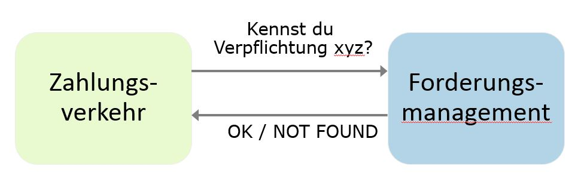
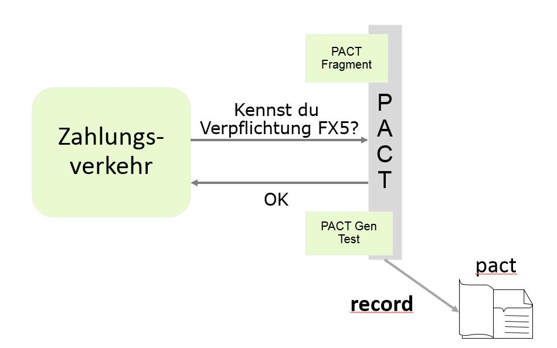
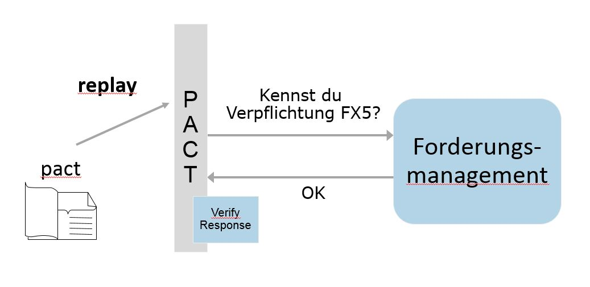

Unit Testing
Philipp Huber
Agenda
Examples
https://github.com/devonfw-ng-adv-training/devonfw-testingWhy unit tests?
- recognize bad component design
- easy to refactor application
- implement new features without breaking old ones
How to keep your code testable (& maintainable & readable...)?
- Dumb & Smart
- Thin & Fat
Template (HTML) = Dumb & Declarative
- Declarative code says WHAT to do
- Avoid complicated logic
- Small and simple
- *ngIf
- knows its component & its sub-component
Component (TS / Controller) = Smart & Thin

- Manage the view
- Invoke Services
- No http
- Smarter = Fatter?
- Component decides, services processes
- as thin as possible - but no thinner.
Services = Fat, Happy and Specific

- holds business logic
- fatten services, starve components
- SOLID (Single Responsible & Interface Segregation most importantly)
- may manage state or have no state at all
Basics / jasmine
- suites: describe(string, function)
- specs: it(string, function)
- expectations: expect(actual)...
- matchers: toBe(expected), toEqual(expected)...
.. / setup & teardown
- beforeAll
- beforeEach
- afterEach
- afterAll
Why mocking?
- more isolated testing
- strongly typed template checking
- less coupling between components and services
- prefer dumb components over smart components
how to handle child components
- do not mock: use real component
- Use NO_ERRORS_SCHEMA
- Mock component
-
use mocking framework like ng-mocks
works for modules too
how to mock services?
- do not mock: use real service..
- useClass: MockClass
- useValue: return {}
- use jasmine.spy
Testing asynchronous code
- async
- fakeAsync
- done
async
it('should show quote after getQuote (async)', async(() => {
fixture.detectChanges(); // ngOnInit()
expect(quoteEl.textContent).toBe('...', 'should show placeholder');
fixture.whenStable().then(() => { // wait for async getQuote
fixture.detectChanges(); // update view with quote
expect(quoteEl.textContent).toBe(testQuote);
expect(errorMessage()).toBeNull('should not show error');
});
}));
fakeAsync
it('Button label via fakeAsync() and tick()', fakeAsync(() => {
expect(el.nativeElement.textContent.trim()).toBe('');
fixture.detectChanges();
expect(el.nativeElement.textContent.trim()).toBe('Login');
spyOn(authService, 'isAuthenticated').and
.returnValue(Promise.resolve(true));
component.ngOnInit();
tick();
fixture.detectChanges();
expect(el.nativeElement.textContent.trim()).toBe('Logout');
}));
done
it('should show last quote (quote done)', (done: DoneFn) => {
fixture.detectChanges();
component.quote.pipe( last() ).subscribe(() => {
fixture.detectChanges(); // update view with quote
expect(quoteEl.textContent).toBe(testQuote);
expect(errorMessage()).toBeNull('should not show error');
done();
});
});
consumer-driven contract testing
- consumer defines requirements
- for an api of provider
- via tests
- generate contract via pact
- provider tests all contract files in build pipeline
pact / interface
pact / consumer
pact / provider
consumer code (java spring)
@RunWith(SpringRestPactRunner.class)
@Provider("book-service")
@PactFolder("pacts")
@SpringBootTest(webEnvironment = SpringBootTest.WebEnvironment.RANDOM_PORT)
public class ContractTest {
@TestTarget
public final Target target = new SpringBootHttpTarget();
@State("Books exist")
public void user1Exists() {
// nothing to do, real service is used
}
}